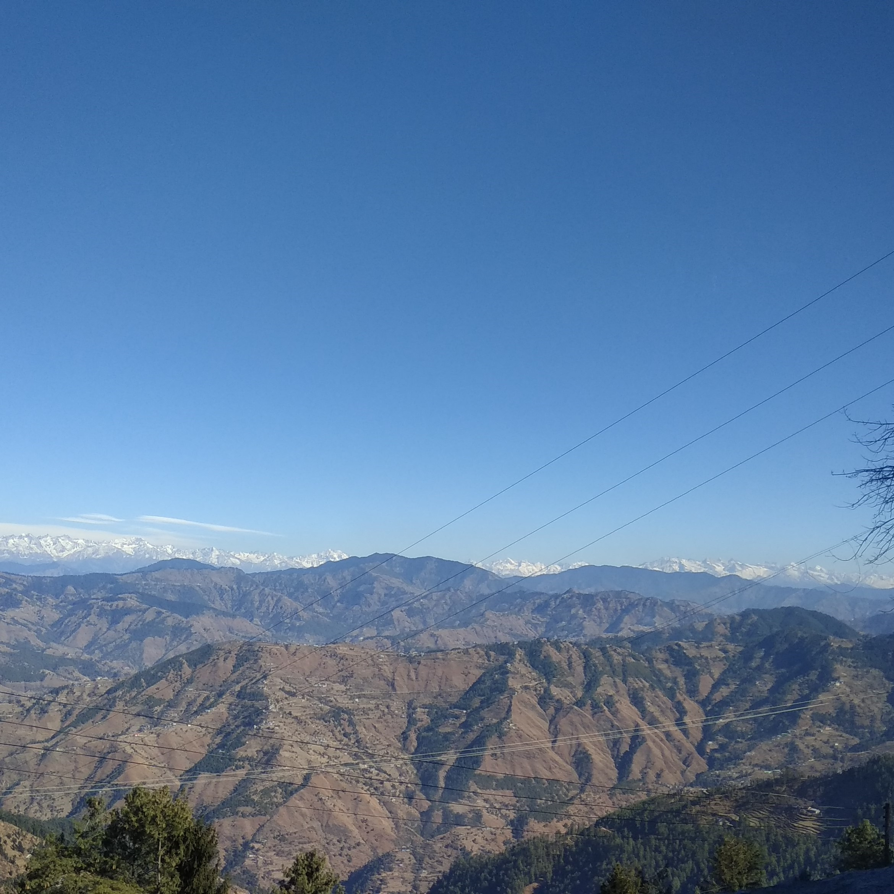
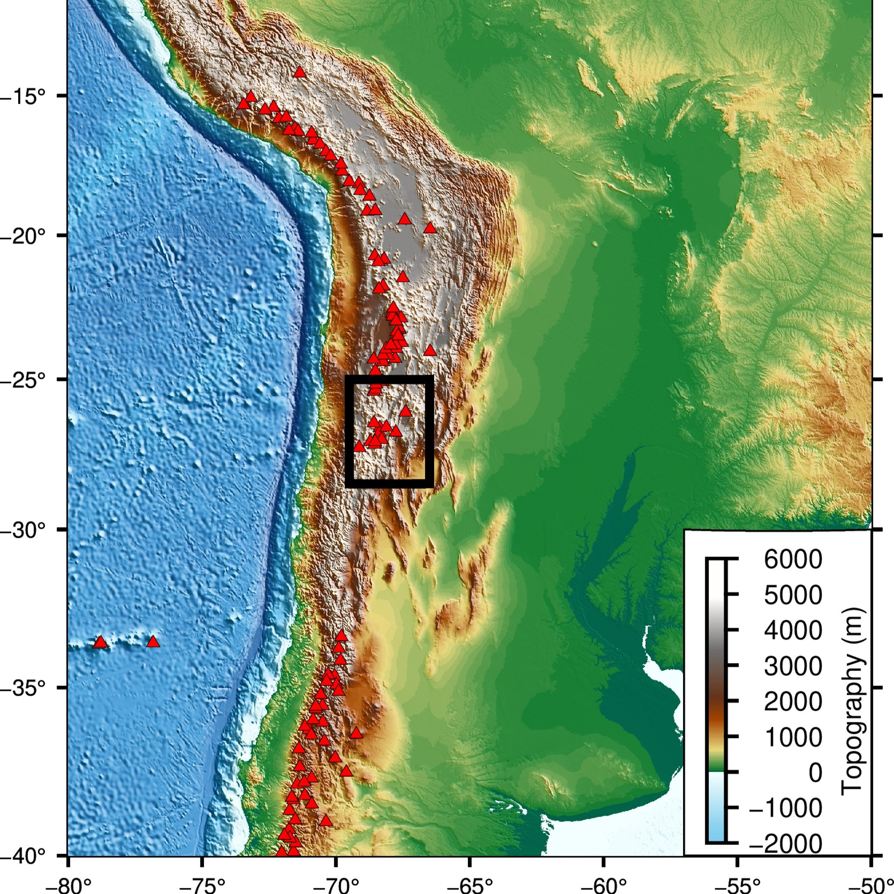
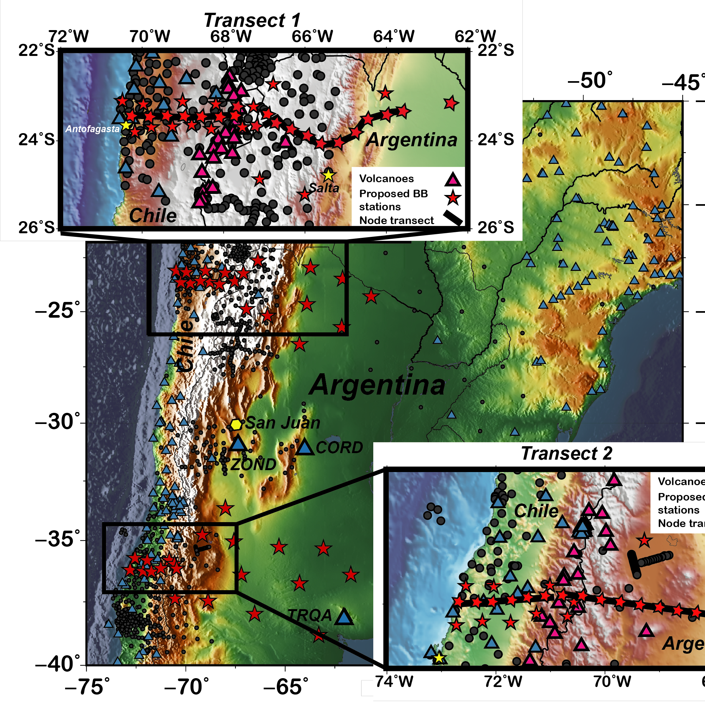

Hi! I'm Sankha,
a graduate student in department of Geosciences at the
University of Arizona.
Group: Global Seismology and Tectonics Group
Advisor: Dr. Eric Kiser
Email : ssmahanti@arizona.edu
Office: Rm. 539, Gould Simpson Building, University of Arizona
About Me
I am a Geoscience graduate student (PhD) at the University of Arizona. I am working with Dr. Eric Kiser in the Global Seismology and Tectonics (GSAT) group. The primary focus of my current research is identification of crustal seismicity using deep learning methods and imaging the shallow crustal structures with different tomography techniques.
I am an Indian citizen and originally I belong from Asansol, an industrially reknowned city in the state of West Bengal in India. I have completed my Bachelor's and Master's degree (BS-MS) in Physics from IISER Kolkata in India (2016-2021). Then I have joined the graduate program here at the university of Arizona from Fall 2021.
I am highly enthusiastic about cricket and soccer. I am also interested in photography. You can see some of my captures here.
Research Project

Crustal Seismicity in Southern Puna Plateau

TransANdean Great Orogeny
(TANGO)
Publications
1. Mahanti, S.S., Mitra, S. and Miyake, H., 2020, December. Teleseismic Source Modelling of Strong-to-major Himalayan Earthquakes. In AGU Fall Meeting Abstracts (Vol. 2020, pp. S037-0015).
2. Banerjee, R., Mahanti, S. S., Chaudhuri, D., Chatterjee, A., and Mitra, S., “Intraplate Strike-slip Earthquakes in NE India: A Kinematic Model”, vol. 2021, 2021.